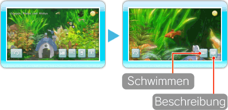
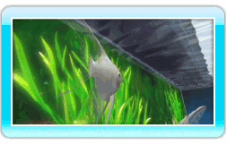
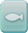
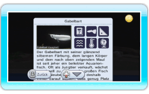

12 |
Fokussieren |
 |
|
Zeige auf einen Fisch im Aquarium und drücke

Wähle , um dem Fisch zu folgen und so das Innere des Aquariums aus seiner Sicht zu erleben. Die folgenden Steuerungsoptionen stehen dir zur Verfügung, wenn du einem Fisch folgst.
Hinweis: Die Fische folgen einem festgelegten Weg und können nicht vom Spieler gesteuert werden.
Wähle , um den Bestimmungs- |
 , um dich auf diesen Fisch zu fokussieren. Wenn du dich auf einen Fisch fokussiert hast, kannst du entweder diesem Fisch folgen und so das Aquarium aus seiner Sicht erleben oder eine Beschreibung seiner Spezies lesen.
, um dich auf diesen Fisch zu fokussieren. Wenn du dich auf einen Fisch fokussiert hast, kannst du entweder diesem Fisch folgen und so das Aquarium aus seiner Sicht erleben oder eine Beschreibung seiner Spezies lesen. , um weiterzuschwimmen.
, um weiterzuschwimmen. |
 |
 |